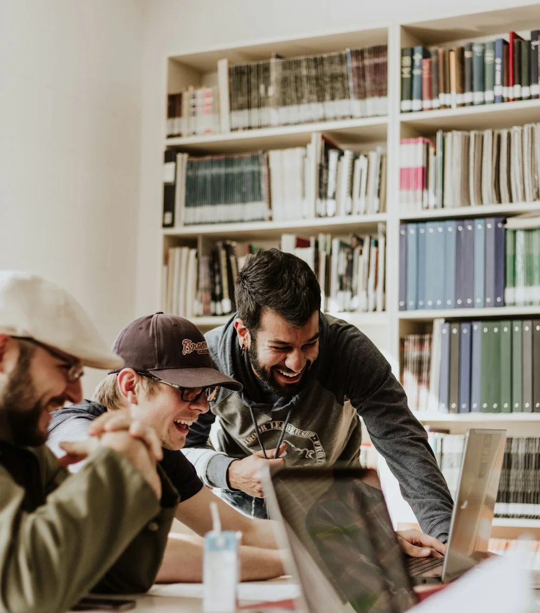

Tell us about your task
Send your brief, marking criteria, academic level and deadline, together with any notes or draft you already have.
From understanding your first assignment brief to refining a dissertation, find support built around your subject, academic level and learning goals.

Choose a starting point below, or share your brief with our team for guidance on the right support.

Build a clear argument, interpret your brief and improve the structure of essays, reports and assignments.
Planning, critical analysis and referencing
Get guidance through your dissertation, from a focused question to a coherent final draft.
Topic selection, chapter planning and feedback
Turn your research idea into a focused proposal with clear aims and a practical approach.
Research questions, scope and methodology
Learn to find relevant sources, compare evidence and organise a critical review of the literature.
Search strategy, synthesis and research gaps
Connect theory with practice and present your analysis in line with your module requirements.
Reports, case analysis and reflective writing
Refine your own draft with support for clarity, academic tone, grammar and consistency.
Language, structure and reference checks
Work through assessment requirements for BTEC, HNC, HND, ATHE, OTHM and other qualifications.
Learning outcomes and assessment criteria
Discuss the structure and presentation of advanced research with support tailored to your project.
Research design, thesis organisation and feedback
Understand tutor feedback, identify gaps and plan improvements for your next submission.
Feedback review, revision planning and study supportSend your brief, marking criteria, academic level and deadline, together with any notes or draft you already have.
Discuss your priorities, the scope of guidance and the timeframe before deciding how to move forward.
Use feedback to strengthen your understanding, refine your work and check it against your assessment criteria.
Share your requirements and tell us where you need support.
Send your brief, academic level and any tutor feedback. We can help you identify the areas where guidance would be most useful.
Yes. Share your draft alongside the assignment brief and tell us whether you need feedback on structure, analysis, language or references.
Include your subject, academic level, task brief, marking criteria, word count, deadline and referencing style. You can send files directly by email or WhatsApp through our contact page.
Use guidance and feedback to develop your own work and understanding. Follow your institution’s rules on external assistance and ensure that any work you submit is your own.